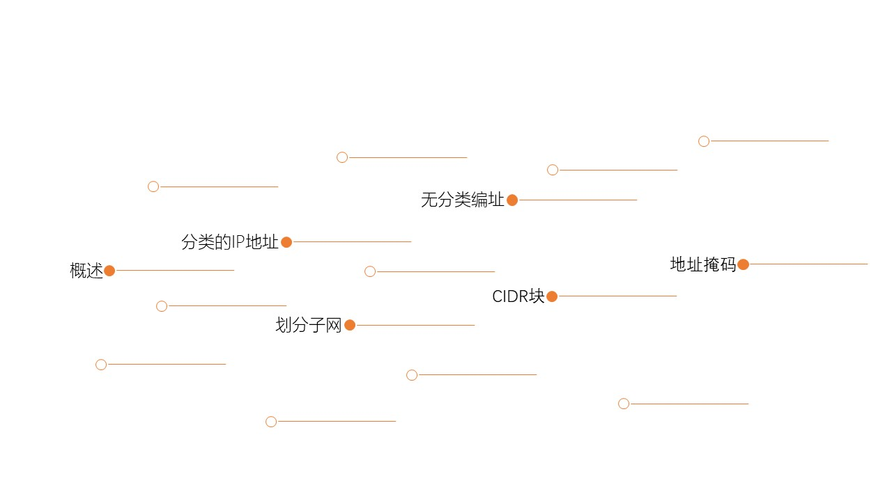

| IP地址 | |||
|---|---|---|---|
| 10000000000010110000001100011111 | |||
| 分段 | |||
| 10000000 | 00001011 | 00000011 | 00011111 |
| 点分十进制 | |||
| 128 | 11 | 3 | 31 |
| 网络号 network ID | 主机号 host ID |
|---|---|
| n bit | (32-n)bit |
| 分类 | 网路地址x + 主机地址y | 网路数量 | 主机数量/网络 | 示例 |
|---|---|---|---|---|
| A类 | 0xxxxxx yyyyyyyy yyyyyyyy yyyyyyyy | 2 8-1 | 2 32-8 | 126.1.0.4 |
| B类 | 10xxxxx xxxxxxxx yyyyyyyy yyyyyyyy | 2 16-2 | 2 32-16 | 128.1.1.2 |
| C类 | 110xxxx xxxxxxxx xxxxxxxx yyyyyyyy | 2 24-3 | 2 32-24 | 192.3.1.1 |
| D类 | 保留 | |||
| E类 | 保留 | |||
| IP地址 | 说明 | 网路地址x | 主机地址y | ||
|---|---|---|---|---|---|
| 1.0.0.0 | 网络地址 | 0000 0001 | 0000 0000 | 0000 0000 | 0000 0000 |
| 1.0.0.1 | 最小主机地址 | 0000 0001 | 0000 0000 | 0000 0000 | 0000 0001 |
| 1.255.255.254 | 最大主机地址 | 0000 0001 | 1111 1111 | 1111 1111 | 1111 1110 |
| 1.255.255.255 | 广播地址 | 0000 0001 | 1111 1111 | 1111 1111 | 1111 1111 |
| 网络号 network ID | 子网号 subnet ID | 主机号 host ID |
|---|---|---|
| n bit | m bit | (32-m-n) bit |
| C类IP地址 | 218 | 75 | 230 | 0 |
| 218 | 75 | 230 | 0000 0000 | |
| 子网掩码 | 255 | 255 | 255 | 128 |
| 255 | 255 | 255 | 1 000 0000 | |
| 结论 | 借了1为主机号划分子网，可以划分的子网数量为2个 | |||
| 每个子网可供分配的主机地址数量为27-2个 | ||||
| 完整化分细节如下 | ||||
| 子网1网络地址 | 218 | 75 | 230 | 0000 0000 |
| 子网1最小主机地址 | 218 | 75 | 230 | 0000 0001 |
| 子网1其它地址 | 218 | 75 | 230 | ... |
| 子网1最大主机地址 | 218 | 75 | 230 | 0111 1110 |
| 子网1广播地址 | 218 | 75 | 230 | 0111 1111 |
| 子网2网络地址 | 218 | 75 | 230 | 1000 0000 |
| 子网2最小主机地址 | 218 | 75 | 230 | 1000 0001 |
| 子网2其它地址 | 218 | 75 | 230 | ... |
| 子网2最大主机地址 | 218 | 75 | 230 | 1111 1110 |
| 子网2广播地址 | 218 | 75 | 230 | 1111 1111 |
| 网络前缀 network prefix | 主机地址 host ID |
|---|---|
| n bit | (32-n)bit |
| 128 | 14 | 35 | 7 |
| 1000 0000 | 0000 1110 | 0010 0011 | 0000 0111 |
| 1000 0000 | 0000 1110 | 0010 0011 | 0000 0111 |
| 说明 | 红色是网络前缀，20bit；其它12bit是主机地址 | ||
| 分类 | 地址掩码 | CIDR形式的地址掩码 |
|---|---|---|
| A类 | 255.0.0.0 | 255.0.0.0/8 |
| B类 | 255.255.0.0 | 255.255.0.0/16 |
| C类 | 255.255.255.0 | 255.255.255.0/24 |
| IP地址 | 128 | 14 | 35 | 7 |
| 二进制 | 1000 0000 | 0000 1110 | 0010 0011 | 0000 0111 |
| 地址掩码 | 1111 1111 | 1111 1111 | 1111 0000 | 0000 0000 |
| 网络地址 | 1000 0000 | 0000 1110 | 0010 0000 | 0000 0000 |
| 说明 | 地址掩码是：255.255.240.0；网络地址：128.14.32.0 | |||
| 2 7 | 2 6 | 2 5 | 2 4 | 2 3 | 2 2 | 2 1 | 2 0 |
| 128 | 64 | 32 | 16 | 8 | 4 | 2 | 1 |
| 地址掩码 | 1111 1111 | 1111 1111 | 1111 0000 | 0000 0000 | 255.255.240.0 |
| IP地址 | 128 | 14 | 0010 0011 | 0000 0111 | 128.14.35.7 |
| 网络地址 | 128 | 14 | 0010 0000 | 0000 0000 | 128.14.32.0 |
| 最小主机地址 | 128 | 14 | 0010 0000 | 0000 0001 | 128.14.32.1 |
| 最大主机地址 | 128 | 14 | 0010 1111 | 1111 1110 | 128.14.47.254 |
| 广播地址 | 128 | 14 | 0010 1111 | 1111 1111 | 128.14.47.255 |
| 聚合C类地址数量 | 232-20 / 28 = 24个 | ||||